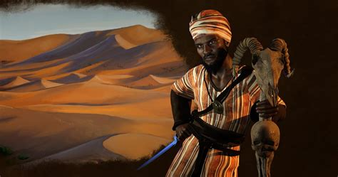

<!DOCTYPE html>
<html lang="en">
<head>
    <link rel="stylesheet" href="Hisotrycsshw.css">

    <meta charset="UTF-8">

    <meta name="viewport" content="width=device-width, initial-scale=1.0">

    <title>History</title>

<main>
    <header><h1>Sundiata Keita</h1>

    <small><center>By Theo Sefertzis 7Warren</center></small></header>

    <h2>Who is Sundiata Keita<u>???</u></h2>
    <h4>Sundiata was a prince and the founder of the Maili empire. Sundiata was also Mansa Musas great uncle and Mansa Musa was the richest man in the world and all of history. 
        After the win at Kirina, Mansa established his capital near malian border nower day. He founded the Mali Empire,
overtaking much of the Empire of Ghana as well. He then took all control of the gold and salt trade, allowing Mali to become rich and powerful.
        Sundiata established the city of Niani as the capital of the empire.
        From Niani, he ruled for 20 years keeping peace in the region and expanding his empire.
    </h4>
        <ul>
            <li>His mother is Sukulung Conté and his father is Naré Maghann Konaté.</li>
            <li>He was born in 1217</li>
            <li>He Died 27-26 in the year 1255 </li>
            <li>The heir to the throne was Mansa Uli I</li>
            <li>He held meals and feasts at his palaces and was known as big eater</li>
            <li>He converted to islam</li>
            <li>He ruled lots of western Africa for the next hundeds of years</li>
        
        </ul>
    
    

    


   
    


    <footer><small>© Theo Sefertzis 2023-2025</small></footer></main>


</head>
<body>
    
</body>
</html>